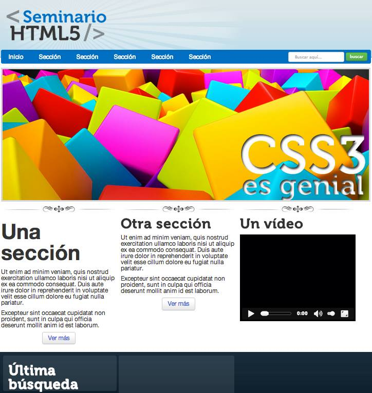

A continuacion se presentarán las actividades de la clase de Programacion Web realizadas durante el curso.
Practica 1
Esta pagina muestra la primera y la basica estructura de HTML 5
Practica 2
La pagina que se muestra a continuacion es una pagina que elaboramos con puro texto, habia tanto texto que la pagina scrolleaba hacia abajo, por lo tanto era necesario bajar la pagina.
en esta actividad utilizamos etiquetas "a" para ir de parrafo en parrafo segun era el que escogieramos.
Practica 3
Introduccion a los formularios usando HTML5.
Practica 4
Utilizando tablas e inserción de imagenes en HTML5.
Practica 5
Utilizando formularios HTML5 como un curriculum vitae.
Practica 6
Introduccion a JavaScript.
Practica 7
Utilizando HTML5 y CSS3.
Practica 8
A esta pagina le dimos un poco de estilos al HTML.
con CSS3 le dimos al header un backgorund de color rosa, algunos botones, logramos colocar tres textos en linea con la propiedad inline-block, al igual que acomodamos una imagen dentro del header para que quedara como imgen del encabezado, un footer, y oviamete un titulo.
Practica 9
en esta actividad se coloco un video solamente y se le dio un estilo de box shadow para ponerle sombra.
Practica 10
Utilizamos la herramienta de estilos de bootstrap para colocar botones con mejores diseños y colores, al igual qu inputs y paneles con la misma firma de bootstrap, algunas cosas quedan como predeterminadas como el font de la letra.
Practica 11

Utilizando HTML5 y CSS3.
Practica 12
Utilizando HTML5 y CSS3.
Practica 13
Utilizando HTML5 y CSS3.
Segundo Parcial Examen de CSS
Segundo examen parcial. Utilizando HTML5 y CSS3.
Tercer Parcial Examen
HTML5, CSS3, JQuery, PHP y una base de datos.
Actividad de PHP
Loaiza Tostado Oscar Francisco
Numero de control: 12170866
17 de Enero de 1994(21 años)
Culiacán Sinaloa México
Tel: (667) 1260493
Email: pako.loaiza@hotmail.com